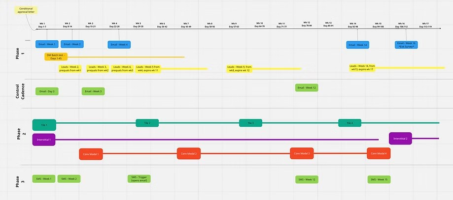
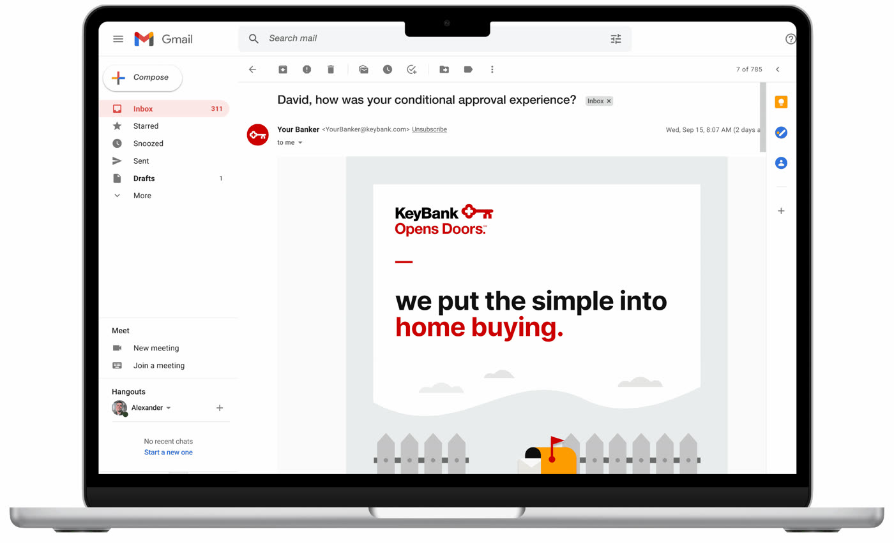
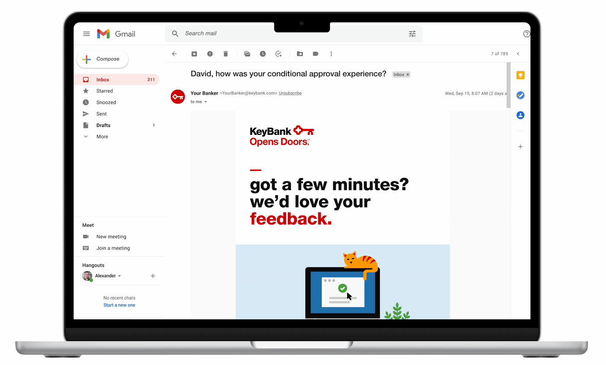
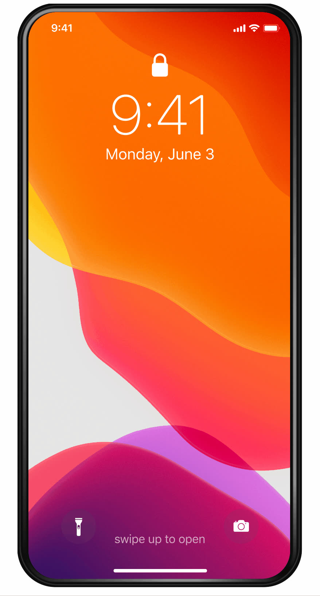
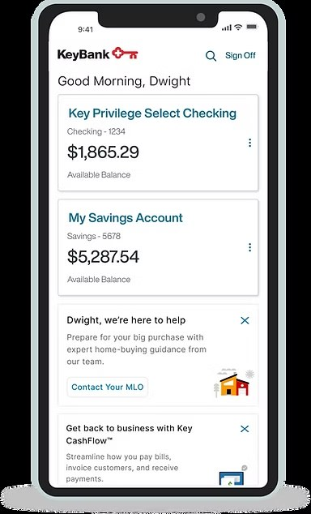
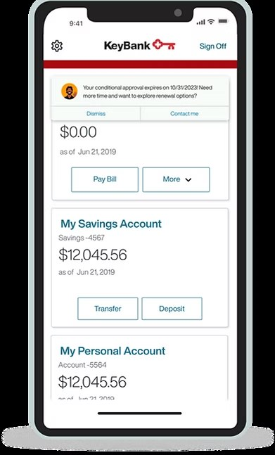
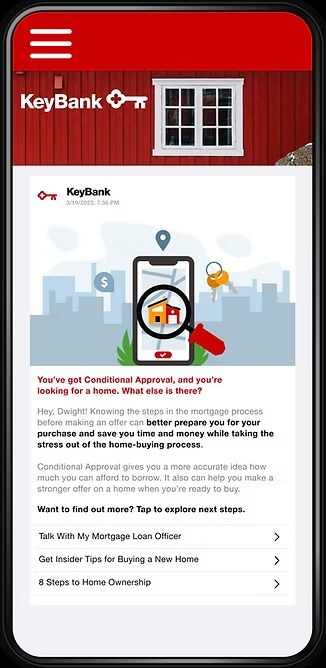
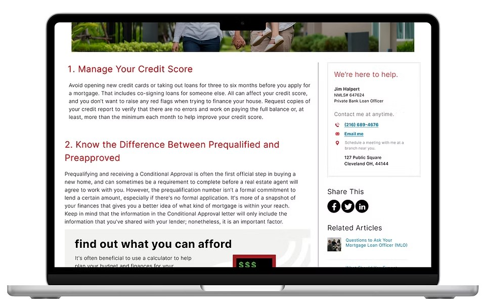
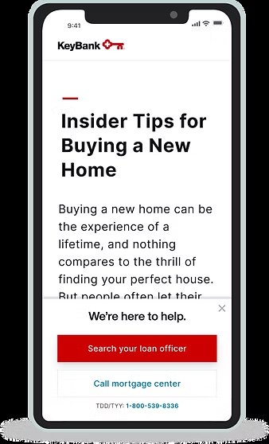

KeyBank
Borrowers were getting conditionally approved and then going quiet. I ran the research, mapped the journey, and designed a seventeen-week communication cadence to keep them moving.
Conditional approval is a milestone the bank celebrates. For the borrower it arrives as one email in the middle of a months-long, unfamiliar process, and then nothing happens until the approval quietly expires.
KeyBank was losing approved borrowers between that email and a completed application. The business goal was increasing the rate at which conditional approvals convert. The design problem underneath it was staying useful to someone during the long, uncertain stretch when there is nothing for the bank to process.
I surveyed borrowers whose conditional approvals had expired, asking directly why. The answers reframed the project.
Your conditional approval for a mortgage with KeyBank recently expired. Would you mind telling us why?
N = 14FIG. 01 — WHY CONDITIONAL APPROVALS EXPIRED
The largest group hadn't lost interest or gone elsewhere. They simply hadn't found a house yet.
43% HAD NOT FOUND A HOME — THE SINGLE LARGEST REASONThat changed what the campaign needed to be. If borrowers are still searching, more sales pressure is the wrong instrument. What they need is to stay informed, stay confident, and know how to reach their loan officer the moment something happens.
The second finding pointed the other direction: 29% had gone with another lender. So the cadence also had to carry reasons to stay, which a separate survey clarified were trust and rate rather than speed or convenience.
Trusting your financial institution is very important. Lowest interest rate saves you money in the long run.
Seventeen weeks, three phases, nine channels, mapped against what a borrower is actually doing at each point in a home search. The control group stayed on the original two-email cadence shown in the middle row.

Phase one carries education and check-ins while the search is active. Phase two adds in-product touchpoints for clients already logged into online banking. Phase three handles expiration and renewal.
Three pieces carry the argument. The rest are in the gallery below.
The highest-intent moment isn't an inbox, it's a client already signed in to online banking. Two modals bracket the journey: one encouraging an offer while the approval is live, one catching it before expiry. Both route to the same action, contacting the loan officer, so there is exactly one next step at any point.
New functionality rather than new messaging. A persistent module lets a borrower reach their loan officer by phone or email from inside any educational article, which closes the gap between reading something useful and acting on it. This is the piece that required the most collaboration with development.
Seven articles written for the waiting period, not the sales moment. If the largest group of lapsed borrowers is still house-hunting, the most valuable thing the bank can send is something that makes them better at house-hunting.
Seven emails, two call scripts, four conversational modals, five messaging tiles, two interstitials, five SMS messages, five SMS landing pages, seven educational article landing pages, and new contact module functionality for key.com.








SHOWN AT THUMBNAIL SCALE
Completed mortgage applications trended higher for clients in the new journey than for those held on the control cadence. The loan officer call scripts were adopted beyond the pilot and standardized for use across the bank.
REPLACE WITH THE ACTUAL PULL-THROUGH DELTA IF YOU CAN GET IT
The survey that reframed this project had fourteen respondents. It pointed somewhere useful and the direction held up, but I'd want a larger sample before treating 43% as a number rather than a signal. Given the same three months again, I'd run the survey earlier and wider so the cadence design rested on firmer ground.
Rewrite this in your own voice. The shape is what matters: name a real limitation, show you know what it cost, say what you'd change.